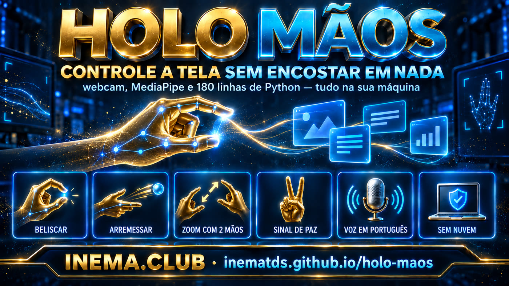
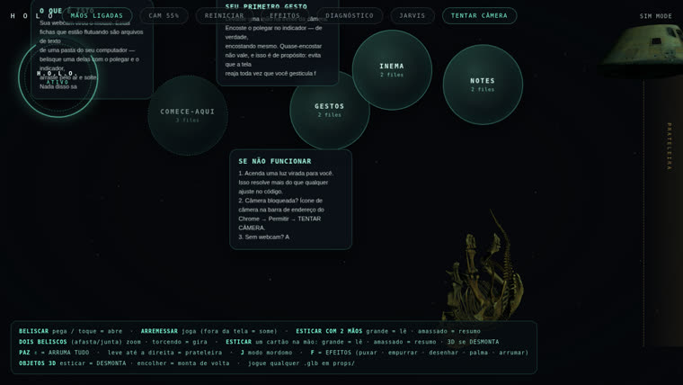

Pellizca una tarjeta en el aire y arrástrala. Junta las dos manos para hacer zoom. Haz el signo de la paz y todo vuelve a su lugar. En portugués, y nada sale de tu computadora.

El reconocimiento de las manos ocurre dentro del propio navegador. No hay ningún servidor de IA de por medio, ni registro ni clave de API.
MediaPipe de Google viene dentro de la carpeta del proyecto; no se descarga al usarlo. Funciona sin conexión y las imágenes de la cámara no llegan a ningún servidor.
Subtítulos, avisos de cámara y el mayordomo hablando: 25 fragmentos traducidos mediante un patch versionado. La voz usa el sintetizador de la propia computadora, en pt-BR.
Python 3 y Chrome. Ningún pip install, sin dependencias: el servidor tiene 180 líneas y usa solo la biblioteca estándar.
Todo el proceso ocurre dentro de la pestaña del navegador. El servidor Python solo entrega la página y lee tus archivos de texto.
Entrega la página, enumera los archivos .md de la carpeta que indiques y devuelve los modelos 3D. Las subcarpetas se convierten en orbes; los archivos sueltos, en tarjetas.
Lee las manos, decide si hubo pinza, lanzamiento, zoom o señal de paz, y aplica física real: inercia, fricción y rebote en los bordes.
No hay modelo de lenguaje, no hay nube ni se lee tu contenido. El único «modelo» es el rastreador de manos, y se ejecuta localmente.
Probado en Linux (Ubuntu) el 21/09/2026. El autor original documenta Mac y Windows; funciona en los tres sin cambiar nada.
Ya viene en Mac y Linux. En Windows, descárgalo de python.org. Nada más que la biblioteca estándar.
# comprueba la versión python3 --version
Es el navegador donde el seguimiento funciona mejor. Tendrás que permitir el acceso a la cámara una vez.
# ¿sin webcam? usa el modo de demostración http://localhost:4890/?sim=1
Solo para descargar el proyecto original, que está en un repositorio separado (su código es el del motor).
git --versionComandos reales, en orden. De principio a fin lleva unos dos minutos.
Incluye la capa en portugués, las notas de ejemplo y los scripts.
git clone https://github.com/inematds/holo-maos.git cd holo-maos
El motor es de Zubair Trabzada, tiene licencia MIT y está en su repositorio. No copiamos los 77 MB: el script lo clona directamente desde la fuente.
bash scripts/baixar-upstream.sh # clona en upstream/
Son 25 reemplazos exactos: subtítulos, avisos de cámara, frases del mayordomo y la selección de la voz pt-BR. El script guarda el archivo original al lado (holo.html.original) y avisa si el autor cambió algún fragmento, en lugar de traducirlo a medias.
python3 scripts/aplicar-ptbr.py # [ptbr] 25 fragmento(s) traducido(s), 0 perdido(s) # [ptbr] holo.json apuntando a .../notas-inema
Puerto 4890. Si está ocupado, cámbialo con HOLO_PORT.
cd upstream && python3 server.py # ¿puerto ocupado? HOLO_PORT=4891 python3 server.py
Permite el acceso a la cámara cuando Chrome lo solicite. Enciende una luz frente a ti: eso ayuda más que cualquier ajuste en el código.
http://localhost:4890 # con cámara http://localhost:4890/?sim=1 # sin cámara: manos sintéticas
Cualquier carpeta con archivos .md o .txt. Las subcarpetas se convierten en orbes; los archivos sueltos, en tarjetas sobre la mesa.
# upstream/holo.json {"folder": "/caminho/para/suas/notas"}
Las cuatro constantes que controlan la sensibilidad están al principio del script, en upstream/holo.html.
// NÚMERO MAYOR = más fácil de agarrar const PINCH_IN = .30, PINCH_OUT = .42, PINCH_EARN = 2; const AMP = 1.45; // alcance del brazo hasta el borde de la pantalla
Si vas a memorizar uno solo, memoriza la señal de paz: deshace cualquier lío.
BELISCAR pega o cartão, arrasta, arremessa com inércia belisco rápido abre a pasta-orbe ou abre a nota arremessar para fora da tela = some (reabra a orbe) 2 beliscos afasta/junta = zoom · torcendo = gira esticar 2 mãos grande = lê · amassado = a voz resume PAZ ✌ (segurar) arruma tudo de volta tecla F efeitos: puxar, empurrar, desenhar, palma tecla J modo mordomo: fica dourado e fala português tecla H desliga as mãos e usa só o mouse
Como sustituto del mouse en el día a día, no sirve: el brazo en el aire se cansa en minutos. El uso real es otro.

Pasar diapositivas con un gesto, desde lejos y sin tener un puntero en la mano.
Panadería, clínica, recepción: nadie toca la pantalla. Higiene sin un lector de gestos costoso.
Quien tenga dolor en la muñeca o limitaciones de movimiento puede manejar la pantalla sin mouse.
Sin promesas sobre lo que no existe: abajo, el estado real al 21/09/2026.
?probe=1 pasó 26/26 en una ejecución y después empezó a detenerse en 2/4, también en el código original, sin nuestro patch. Es la prueba que toca la tarjeta antes de que la cámara mapee la pantalla, en un navegador sin interfaz. Con una cámara real no molesta.